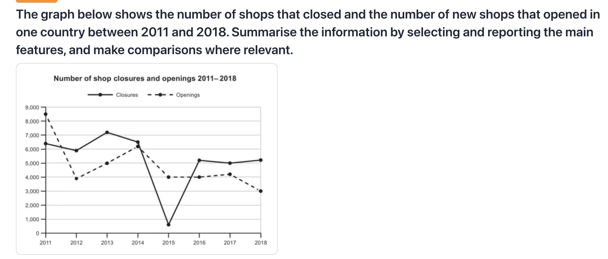

Shop Closures and Openings (2011–2018)
动态类 折线图 修改日期：2026-04-13
| 评分维度 | 修改前 | 修改后 | 变化 | 说明 |
|---|---|---|---|---|
| Task Achievement (TA) | 4.0 | 7.0 | +3.0 | Overview 清晰概括了两个核心趋势和交叉点；数据准确引用；完整覆盖所有关键数据特征。 |
| Coherence and Cohesion (CC) | 5.0 | 7.0 | +2.0 | 按时间和逻辑分组数据（收敛期+波动期），段落间衔接清晰。 |
| Lexical Resource (LR) | 4.0 | 7.0 | +3.0 | 使用了 plummeted, rebounding, volatility, intersection 等高级词汇；消除所有拼写错误。 |
| Grammatical Range and Accuracy (GRA) | 4.0 | 7.0 | +3.0 | 使用了定语从句、分词结构、时间状语从句等多种句式；零语法错误。 |
题目原文：The graph below shows the number of shops that closed and the number of new shops that opened in one country between 2011 and 2018.
Summarise the information by selecting and reporting the main features, and make comparisons where relevant.

The line chart illustrates the changes in number of shop closures and openings from 2011 to 2020 in one country.
20 wordsOverall, it is clear that closed shop are more than opened shops in most of the time. Additionally, there was a significant fluctuations in both choices throughout the seven year.
34 wordsFirstly, there was a considerable decrease in openings between 2011 to 2018. Opened shops started with the largest figures, with a total of 8500 shops, but ended with the second least in 3000 shops. In contrast, closed shops started with a total of 63000 and in 2012, it overtooked closed shops, edging ahead and remianing higher thereafter until in 2014
58 wordsSecondly, in 2014, closures and openings intersected at approximatelty 6000. After that, the year of 2015 saw a dramatic drop in closures, reached the bottom of 500 in 2015. However, it quickly bounced up in 2016 and reached the figure in 52000, remainding higher thereafter than the opened shops.
49 words开头段（Introduction / Paraphrase）
原因：修正时间错误，删除冗余 "changes in"，补充 "new" 使语义更明确，调整语序更流畅。
概述段（Overview）
主体段一（Body Paragraph 1）— 2011-2014 年两线收敛
⚠️ 此段存在严重问题（数据错误 + 逻辑混乱 + 多处语法/拼写错误），需要较大幅度重写。
原文中的具体错误：原因：原段逻辑混乱、数据错误严重、指代不清。重写后按时间顺序清晰描述两条线从 2011 到 2014 的走势，数据准确，逻辑清晰。
主体段二（Body Paragraph 2）— 2014 年交叉后的走势
原因：原段数据有误且遗漏 2017-2018 年变化。重写后完整覆盖 2014-2018 年数据，使用了更高级的词汇（plummeted, volatility, rebounding），并在段末补充 openings 走势作为对比。
内容与结构建议
修改统计
本次修改的核心工作包括：(1) 纠正了全部数据错误（时间范围、具体数值），确保与图表完全一致；(2) 重写了 Overview 使其准确概括两个核心趋势和交叉点特征；(3) 理清了 Body 段落的逻辑，按"2011-2014 收敛期"和"2014-2018 波动期"合理分组；(4) 消除了所有拼写错误和语法错误；(5) 补充了用户遗漏的 2017-2018 年数据变化描述。
The line graph illustrates the number of shop closures and new shop openings in one country between 2011 and 2018.
21 wordsOverall, it is clear that shop openings declined steadily throughout the period, while closures fluctuated significantly. Notably, the two figures intersected in around 2014, after which closures generally exceeded openings.
32 wordsIn 2011, the number of new shop openings stood at approximately 8,500, which was the highest figure for either category. This figure then fell consistently, reaching roughly 3,000 by 2018. Closures began lower, at around 6,300 in 2011, and also decreased gradually to meet openings at approximately 4,400 in 2014.
52 wordsFollowing the intersection, closures experienced dramatic volatility. In 2015, the figure plummeted to its lowest point of approximately 600, before rebounding sharply to around 5,100 in 2016. After declining again to roughly 3,000 in 2017, closures rose to approximately 5,500 in 2018. Meanwhile, openings continued their gradual descent, remaining below closures for most of this later period.
59 words